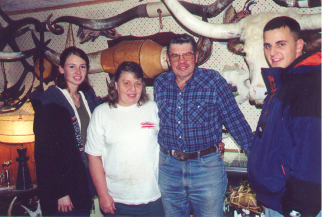

| When I heard what Billy
Luthy said, I would not have been more surprised than if he had shouted, "I just saw
a kangaroo hop through the forest." In the Big Hole Mountains that day, Ron
Messer and I scooted toward home on our ATV's. As we rounded a bend on the dirt
road, we saw Bill Luthy's corral, pickup, and horse trailer. Bill stood beside
his horse and waited patiently for us to pass. We had time, so we pulled off the road and walked over to Bill. It was
October 2000: roundup time. Bill and members of the Lyman Creek Grazing Association
were gathering cattle from a 5,455-acre, state-owned, mountain range. Dressed in a
dark-blue, flannel shirt, faded Levis, worn brown boots and hat, Bill was every inch a
cowboy. But instead of a gun at this hip, he carried a two-way radio. During our
conversation, Bill was interrupted several times on the radio by his friends who were
pushing cattle along the higher ridges.
"Bill, do you ever lose cattle
during the summer?" I asked. I wondered about finding all the cattle scattered
throughout the mountains and valleys.
"Oh yes," he answered.
"This summer I lost 14 head to mountain lions." This was not what I expected to
hear. Bill’s friendly face reflected honesty and sincerity. He then added,
"It’s getting darn discouraging. You know, that’s my profit, my year’s
work."
Bill continued, "This summer I had a
calf sick with pneumonia. It was right there in the corral. I didn’t have any
serum to doctor it, so I drove to my house to get some. When I got back, a lion had killed
it and pulled it over the pole fence."
Having lived in Madison County for the
past 33 years, I had no idea that cougars roamed the Big Hole Mountains which rise a few
miles east of Rexburg and west of Driggs. Here one finds Kelly Canyon, Heise Hot Springs,
Moody Meadows, Thousand Springs, Hell Hole Canyon, Limekiln Canyon, Spori Canyon, Green
Canyon Hot Springs, Prospect Peak, Castle Lake, Garn Mountain, and the south fork of the
Snake River.
These mountains provide recreation opportunities for campers, hikers, backpackers, ATV
riders, mountain bikers, and motorcycle enthusiasts. But now the hungry cats which kill
cattle and devastate deer populations might also see a child or lone hiker as food.
"See that rock up there," Bill
said as he pointed. "Just this afternoon, a mountain lion sat on that rock and
watched me. A track is just down the road."
"Will you show us?" I asked.
"Sure. Come on."
Bill mounted his horse, and Ron and I
walked beside him. Bill soon stopped, pointed, and said, "That’s it."
The fresh, large track was imprinted
perfectly in the moist, black earth. There was no mistaking this track. Although mountain
lions normally keep their claws retracted when walking, for this particular step, the lion
had extended its claws. The earth was sliced cleanly by each individual claw, and these
marks connected to the imprints of the pads. This was the first time I had ever seen such
a track, and the moment was thrilling. What beauty. What wild, ferocious cunning was
connected to that print.
When Ron and I finished visiting with
Bill, we fired up our ATV’s and rolled out of the beautiful mountains. We soon loaded
our machines on the trailer and drove back to Rexburg. But this experience with Bill
enriched my imagination and piqued my interests. I yearned to know more about these
illusive predators which hunted the hills just 15 minutes away from my front door.
Later, wanting to learn more, I
made an appointment to meet with Bill at his home in Archer, Idaho. For this meeting as
shown in the next picture, I took two BYU-Idaho students, Kenny Woodson and Amy
Ethridge. Bill Luthy and his wife, Nelia, are also shown.

Bill reported that five years ago, few livestock in this area were lost to predators. But
each year since, losses have increased. Now in addition to kills in the mountains, lions
come onto his property in Archer and destroy calves.
One night Bill walked through his yard to the corral to
check a cow which was soon to give birth. He said, "I felt I was being watched,
so I shined my light around and focused on a cougar. It was sitting on its haunches,
switching its tail, watching me."
Bill continued, "One morning we found a cougar track
on our back step. We think the animal had been eating the food set out for our pet
cat."
As we visited, I realized Bill had a great love for nature, for animals both domestic and
wild, and for his western way of life. But financially, he was suffering greatly
because of mountain lion kills. As of this date, November 29, 2000, he has not been
able to get any depredation payments from the Idaho Fish and Game.
Click on the
links below to see pictures of some of Bill Luthy's calves which have been killed by
mountain lions, both in the forest and on his home property. "Calf 6"
shows claw marks on the head of the calf.
To help understand this veteran rancher, also read the text of an award from the State of
Idaho (Idaho State Board of Land
Commissioners) given to the Lyman Creek Grazing
Association. The men in this association are examples for the state of Idaho of good
land / livestock management techniques.
|
Calf
1 |
Calf 2 |
Calf 3 |
Calf 4 |
|
Calf 5 |
Calf
6
|
Award
|
|
|
|